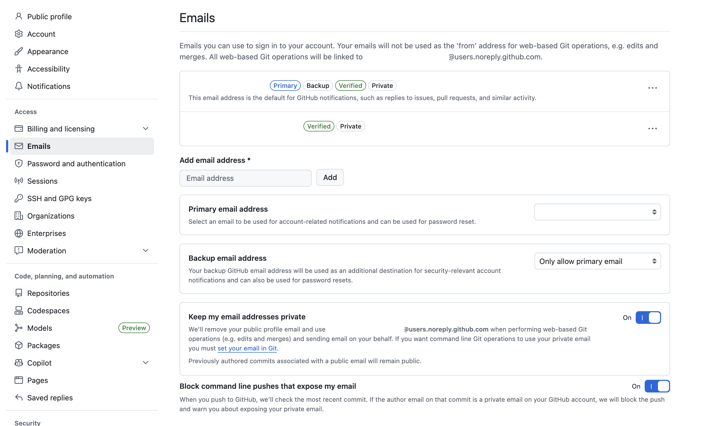

OS 설정
Git 비공개 설정과 로컬·글로벌 Git 이메일 바꾸기
GitHub에서 이메일 비공개 옵션을 켰는데도 커밋 이메일이 그대로 노출될 수 있습니다. 계정 설정과 터미널 Git 설정은 따로 움직이기 때문에, 둘을 같이 맞추는 방법입니다.
개요
GitHub 프로필에서 이메일을 숨기고 싶을 때 많은 사람이 먼저
Keep my email addresses private 옵션을 켭니다.
방향은 맞지만, 여기서 끝나지는 않습니다.
이유는 단순합니다. GitHub 웹에서 이루어지는 작업과, 내 컴퓨터
터미널에서 만드는 커밋은 이메일 기준이 다를 수 있기 때문입니다.
웹에서 병합하거나 수정할 때는 GitHub 계정 설정이 적용되지만,
로컬에서 git commit을 하면 내 Git 설정값이 그대로
커밋 작성자 이메일로 들어갑니다.
이메일 노출을 줄이려면 GitHub 계정의 비공개 옵션을 켜고,
터미널 Git의 user.email도 같이 바꿔야 합니다.
GitHub에서 먼저 켜둘 설정
GitHub 계정 설정의 Emails 화면에서는 내가 쓸
비공개 이메일이 어떻게 잡혀 있는지와, 이메일 노출을 막는 옵션이
켜져 있는지를 한 번에 확인할 수 있습니다.

Keep my email addresses private,
Block command line pushes that expose my email
옵션 상태를 같이 확인하면 됩니다.
Keep my email addresses private: 웹 기반 Git 작업에서 공개 이메일 대신 GitHub의 비공개 이메일을 사용합니다.Block command line pushes that expose my email: 최근 커밋이 개인 이메일을 드러내면 푸시를 막아줍니다.
특히 첫 번째 옵션을 켜면 GitHub가 제공하는
users.noreply.github.com 형식의 비공개 이메일을
쓰게 됩니다. 다만 중요한 포인트는, 이 옵션만 켠다고 해서 내
로컬 Git 설정값이 자동으로 바뀌지는 않는다는 점입니다.
그리고 스크린샷에도 적혀 있듯이, 이미 공개 이메일로 작성된 예전 커밋은 그대로 남습니다. 즉, 이후 커밋부터 가리는 설정이라고 생각하면 이해가 쉽습니다.
글로벌 설정과 로컬 설정 차이
Git 이메일 설정은 보통 두 레벨로 관리됩니다. 전역 설정은 내 컴퓨터 전체의 기본값이고, 로컬 설정은 특정 저장소 하나에서만 전역값을 덮어씁니다.
# 전역 설정 확인
git config --global --get user.email
# 현재 저장소 로컬 설정 확인
git config --get user.email
# 어느 파일에서 읽혔는지까지 확인
git config --show-origin --get user.email- 글로벌: 보통
~/.gitconfig에 저장됩니다. - 로컬: 현재 저장소의
.git/config에 저장됩니다. - 우선순위: 로컬 설정이 있으면 글로벌보다 로컬이 우선합니다.
그래서 “전역 이메일은 분명 바꿨는데 어떤 저장소에서는 여전히 예전
이메일이 찍힌다”는 상황이 자주 생깁니다. 대개는 해당 저장소에
로컬 user.email이 따로 남아 있는 경우입니다.
Git 이메일 설정 바꾸기
가장 먼저 할 일은 GitHub에서 보여주는 비공개 이메일 주소를 확인하는 것입니다. 그 주소를 글로벌 기본값으로 넣어두면, 개인 이메일이 커밋 메타데이터에 직접 들어갈 가능성을 크게 줄일 수 있습니다.
1. 글로벌 기본 이메일 바꾸기
git config --global user.email "내-비공개-이메일@users.noreply.github.com"
git config --global user.name "내 이름 또는 GitHub 표시 이름"이제 새 저장소를 만들거나 별도 설정이 없는 프로젝트에서는 이 글로벌 값이 기본으로 사용됩니다.
2. 특정 저장소만 다른 이메일 쓰기
회사 저장소처럼 별도 이메일을 써야 하는 프로젝트가 있다면, 그 저장소 안에서만 로컬 설정을 덮어쓰면 됩니다.
git config user.email "work@example.com"
git config user.name "회사 계정 이름"이 명령은 현재 디렉터리의 저장소에만 적용됩니다. 즉, 개인 프로젝트는 비공개 이메일을 유지하고, 회사 저장소만 업무용 이메일을 쓰는 식으로 분리할 수 있습니다.
3. 로컬 덮어쓰기 해제하기
특정 저장소가 글로벌 값을 다시 따르게 만들고 싶다면 로컬 설정을 제거하면 됩니다.
git config --unset user.email
git config --unset user.name
GitHub에서 비공개 옵션을 켰더라도, 로컬 저장소에 예전
user.email이 남아 있으면 그 값으로 커밋이 만들어질
수 있습니다. 설정이 안 먹는 것처럼 보일 때는 로컬 값을 먼저
의심하면 됩니다.
최종 확인 방법
바꾼 뒤에는 “지금 어떤 이메일이 실제로 사용될지”를 바로 확인하는 습관이 중요합니다.
git config --global --get user.email
git config --get user.email
git config --show-origin --get user.email
git config --list --show-origin | rg "user.name|user.email"- 전역값이 기대한 비공개 이메일로 바뀌었는지 확인합니다.
- 현재 저장소 로컬값이 따로 있는지도 확인합니다.
- 어느 파일에서 읽힌 값인지까지 보면 원인 파악이 빨라집니다.
만약 GitHub에서 푸시가 막혔다면, 방금 만든 최신 커밋의 작성자 이메일이 공개 이메일인지 먼저 확인해보면 됩니다. 설정을 고친 뒤 최신 커밋만 다시 작성하면 해결되는 경우가 많습니다.
git commit --amend --reset-author --no-edit그런 다음 원격에 아직 반영하지 않은 브랜치라면 다시 푸시해서 확인하면 됩니다.
마무리
Git 이메일을 숨기고 싶다면 정답은 하나가 아니라 두 단계입니다.
GitHub 계정에서 비공개 옵션을 켜고, 내 컴퓨터 Git의
user.email도 원하는 값으로 맞춰야 합니다.
개인 프로젝트는 GitHub 비공개 이메일을 글로벌 기본값으로 두고, 회사 프로젝트만 로컬 설정으로 분리하는 방식이 가장 실용적입니다. 이 흐름만 정리해두면 이메일이 섞이거나 의도치 않게 노출되는 일을 꽤 줄일 수 있습니다.